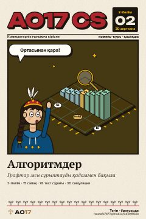

AO17 CS курсы / 2-бөлім: 3D зертхана / Алгоритмдер

Алгоритмдер · 8-сабақ · ≈25 мин · 2 қадам · 4 сұрақ
Дейкстра алгоритмі
Dijkstra
Салмақты графтағы ең қысқа жол: навигаторлар осылай жұмыс істейді.
Кино-түсіндіру: сабақтың өзегі бір минуттық мультфильмде. Мәтіні төменде.
Фильмнің мәтіні (сабақтың қадамдарынан құрастырылған)
- Сұрақ. Дейкстра келесі бекітетін төбені қалай таңдайды?
- Бейне. BFS-тің толқыны енді уақытпен таралады: ұзын жолмен толқын баяу жетеді. Ең бірінші жеткен толқын: ең арзан жол.
- Болжа. Дейкстра келесі бекітетін төбені қалай таңдайды? Жауап: Бекітілмегендердің ішінде dist ең кіші төбені. Бұл: «ашкөз» (greedy) таңдау. Салмақтар теріс емес болса, ең кіші dist енді ешбір жолмен жақсара алмайды: сондықтан оны бекітуге болады.
- Көр. 1-қадам, «Дейкстра алгоритмі». Дейкстра алгоритмі (1956): әр қадамда ең жақын, әлі бекітілмеген төбені ал да, оны бекіт. Сосын оның көршілері арқылы қашықтықтарды жақсартып көр (relaxation):
- Көр. 2-қадам, «Басқа бағыт». Дейкстра бір іске қосылуда бастаудан барлық төбеге дейінгі ең арзан жолдарды табады (shortest-path tree). Мақсатты өзгертсең: қайта есептеудің қажеті жоқ; бастауды өзгертсең: қажет.
- Көр. Нақты әлемде: Навигаторлар бүкіл елдің картасына Дейкстраны тікелей жүргізбейді: A* алгоритмі мақсатқа қарай «бағытталған» эвристика қосады (түзу сызықпен қашықтық), ал contraction hierarchies картаны алдын ала өңдеп, сұранысты…
- Түйін. Салмақты графтағы ең қысқа жол: навигаторлар осылай жұмыс істейді.
- Түйін. Жиі қате: Жолдар картасында B-дан G-ға ең арзан жолдың құны қанша? Жауап: «10». Дұрысы: «7». B → D → F → H → G: 2 + 2 + 2 + 1 = 7. Тура B → E → G: 6 + 4 = 10, қымбатырақ.
1Дейкстра алгоритмі
Идея
Дейкстра алгоритмі (1956): әр қадамда ең жақын, әлі бекітілмеген төбені ал да, оны бекіт. Сосын оның көршілері арқылы қашықтықтарды жақсартып көр (relaxation):
dist[start] = 0, басқалары = ∞
while бекітілмеген төбе бар:
v = dist[v] ең кіші бекітілмеген төбе
бекіт v
for each көрші u, салмағы w:
if dist[v] + w < dist[u]:
dist[u] = dist[v] + w; prev[u] = vТүйсік
BFS-тің толқыны енді уақытпен таралады: ұзын жолмен толқын баяу жетеді. Ең бірінші жеткен толқын: ең арзан жол.
Есептеп көрейік
Жолдар картасы, A-дан бастаймыз. Бекіту реті және қашықтықтар:
- A = 0 → B = 2, C = 5
- B = 2 → D = 4, E = 8
- D = 4 → F = 6
- C = 5 → E = min(8, 5 + 1) = 6 (жақсарды!)
- E = 6 → G = 6 + 4 = 10
- F = 6 → H = 8
- H = 8 → G = min(10, 8 + 1) = 9 (тағы жақсарды!)
- G = 9
H-қа жол: prev сілтемелерімен кері жүреміз: H ← F ← D ← B ← A, құны 8.
Нақты әлемде
Google Maps, 2GIS, Яндекс Навигатор: Дейкстраның жетілдірілген нұсқалары (A*, contraction hierarchies). Интернет маршрутизациясы (OSPF, IS-IS): Дейкстра.
⚠ Жиі қате: теріс салмақтар. Дейкстра «бекітілген төбе енді жақсармайды» деген болжамға сүйенеді. Теріс салмақ болса, ол бұзылады: Беллман-Форд алгоритмі керек.
Тереңірек: неге Дейкстра дұрыс (және теріс салмақта неге бұзылады)
Тұжырым: v бекітілген сәтте dist[v]: шын ең қысқа қашықтық.
Дәлел (қайшылықпен). v: dist[v] қате болған алғашқы бекітілген төбе делік. Онда start-тан v-ға dist[v]-дан арзан шын P жолы бар. P бекітілген аймақтан шығатын жерде бірінші бекітілмеген y төбесі бар (x → y, x бекітілген). x дұрыс бекітілгендіктен, x бекітілгенде y релаксацияланды: dist[y] ≤ d(x) + w(x,y) = d(y). Салмақтар теріс емес, сондықтан P бойындағы y-тен кейінгі бөлік құнды кемітпейді:
dist[y] ≤ d(y) ≤ d(P) < dist[v]Бірақ алгоритм v-ны таңдады, яғни dist[v] ≤ dist[y]. Қайшылық. ∎
Теріс салмақ болса, «P-ның қалған бөлігі құнды кемітпейді» деген қадам бұзылады: бекітілгеннен кейін одан да арзан жол табылуы мүмкін. Мысал: A→B = 1, A→C = 3, C→B = −3. Дейкстра B-ны 1-мен бекітеді, бірақ A→C→B = 0.
Мұндайда Беллман-Форд (O(V·E)) барлық қабырғаны V − 1 рет релаксациялайды.
Енді сен
A-дан H-қа Дейкстраны қадамдап жүргіз. Қашықтықтар 4-қадамда (E) және 7-қадамда (G) жақсаратынын тап.
Өзіңді тексер
Дейкстра келесі бекітетін төбені қалай таңдайды?
Жауабы мен түсіндірмесі
Дұрыс жауап: Бекітілмегендердің ішінде dist ең кіші төбені
Бұл: «ашкөз» (greedy) таңдау. Салмақтар теріс емес болса, ең кіші dist енді ешбір жолмен жақсара алмайды: сондықтан оны бекітуге болады.
dist[C] = 5, C-E салмағы 1, dist[E] = 8. Relaxation-нан кейін dist[E] қанша?
Жауабы мен түсіндірмесі
Дұрыс жауап: 6
5 + 1 = 6 < 8, сондықтан dist[E] = 6 және prev[E] = C.
2Басқа бағыт
Идея
Дейкстра бір іске қосылуда бастаудан барлық төбеге дейінгі ең арзан жолдарды табады (shortest-path tree). Мақсатты өзгертсең: қайта есептеудің қажеті жоқ; бастауды өзгертсең: қажет.
Түйсік
prev сілтемелері: ағаш: әр төбе «маған қалай келдің?» деген сұраққа жауап береді. Бастаудан кез келген төбеге жол: сол ағаштағы тармақ.
Есептеп көрейік
B-дан G-ға: B → D → F → H → G, құны 2 + 2 + 2 + 1 = 7. Тура B-E-G жолы (6 + 4 = 10) қымбатырақ.
Күрделілігі: біздің қарапайым нұсқа әр қадамда ең кішісін сызықтық іздейді: O(V²). Үйінді (binary heap, priority queue) қолдансақ: O((V + E)·log V). Миллиондаған жолы бар карталарда бұл айырма шешуші.
Нақты әлемде
Навигаторлар бүкіл елдің картасына Дейкстраны тікелей жүргізбейді: A* алгоритмі мақсатқа қарай «бағытталған» эвристика қосады (түзу сызықпен қашықтық), ал contraction hierarchies картаны алдын ала өңдеп, сұранысты миллисекундтарда шешеді.
💡 Түйін: Дейкстра = BFS + priority queue. A* = Дейкстра + «мақсатқа дейін шамамен қанша қалды» деген болжам.
Енді сен
Бастауды не мақсатты өзгертіп (мысалы B → G), Дейкстраны қайта жүргіз. Құнын қолмен тексер.
Өзіңді тексер
Жолдар картасында B-дан G-ға ең арзан жолдың құны қанша?
Жауабы мен түсіндірмесі
Дұрыс жауап: 7
B → D → F → H → G: 2 + 2 + 2 + 1 = 7. Тура B → E → G: 6 + 4 = 10, қымбатырақ.
Priority queue (үйінді) Дейкстраның қай бөлігін жылдамдатады?
Жауабы мен түсіндірмесі
Дұрыс жауап: Ең кіші dist-і бар төбені табуды: O(V) орнына O(log V)
Қарапайым нұсқада әр қадамда барлық төбелерді қараймыз: O(V), барлығы O(V²). Үйінді минимумды O(log V)-да береді.
Сабақ AO17 командасының INSIDE TECH 3D платформасынан алынған: дәріс, тест және 3D симуляция - бір сабақтың бөліктері. Симуляция осы сайттың ішінде ашылады, прогресі «Менің шаңырағым» бетіне қосылады.